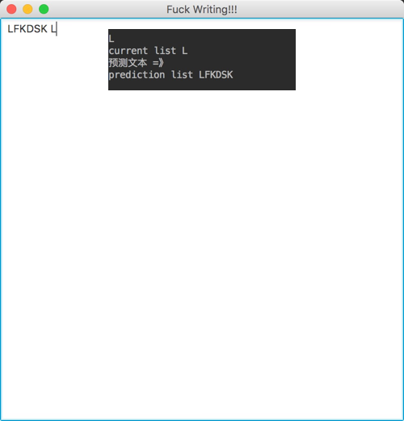

之前看龙书的时候，龙书提到可以在编译器里用动态的生成的NFA自动机来动态匹配自己的输入串，NFA的简单实现其实写起来非常简单，但是我是实际凭感觉写完之后，却觉得并不是非常的好用，在处理自己已经输入过的串，如果还要处理空串和一个符号对应多种路径就势必涉及回溯，所以我就动态生成了一个DFA，应该不是最简的，但是也能满足需求。
DFA状态
package sample;
import java.util.ArrayList;
import java.util.HashMap;
import java.util.Map;
/**
* Dfa 状态
*
* @author liufengkai
* Created by liufengkai on 16/7/10.
*/
public class DfaState implements Comparable<DfaState> {
private static int DFA_ID_COUNT = 0;
/**
* state id
*/
private int stateId;
/**
* transition set
* char / set of dfaState
*/
private Map<Integer, DfaState> transitionSet;
private DfaState parentState;
private Integer parentInput;
/**
* 构造方法
*
* @param input 输入串
* @param parentState 父节点
*/
public DfaState(Integer input, DfaState parentState) {
this.parentInput = input;
this.parentState = parentState;
this.stateId = DFA_ID_COUNT++;
this.transitionSet = new HashMap<>();
}
/**
* 添加一条转移语句
*
* @param input 输入字符
* @param state 下一个状态
* @return 返回添加状态
*/
public DfaState addTransition(int input, DfaState state) {
if (!transitionSet.containsKey(input)) {
transitionSet.put(input, state);
}
return state;
}
public DfaState getTransitionInput(int input) {
return getTransitionSet().get(input);
}
public int getStateId() {
return stateId;
}
public static int getTotalNumber() {
return DFA_ID_COUNT;
}
public Map<Integer, DfaState> getTransitionSet() {
return transitionSet;
}
public DfaState getParentState() {
return parentState;
}
@Override
public int compareTo(DfaState o) {
return 0;
}
public int getParentInput() {
return parentInput;
}
/**
* 打印状态
*/
public void printState() {
System.out.println("state : " + getStateId());
for (Integer integer : transitionSet.keySet()) {
System.out.println("symbol: " +
(char) integer.intValue() + " to :" +
transitionSet.get(integer).getStateId());
transitionSet.get(integer).printState();
}
}
/**
* 返回结束状态
*
* @param list 传入结束状态
*/
public void returnEndList(ArrayList<DfaState> list) {
for (Integer key : transitionSet.keySet()) {
DfaState cur = transitionSet.get(key);
if (cur.getTransitionSet().isEmpty()) {
list.add(cur);
} else {
cur.returnEndList(list);
}
}
}
}
DFAState定义了很多基础的方法，比如每个状态都有唯一的ID值与之对应，虽然是一个DFA但是插入的过程是发现下一个节点不同才分叉，由此看来每个状态都应该有唯一的父节点与之对应，使用了一个Map来记录我们有哪些路径，还有一个方法来递归查找终结节点，使用这个方法来倒序查找预测分析出的字符串，这并不是一个效率很高的方法，之后也会被替换。
DFABuilder创建DFA
package sample;
import java.util.ArrayList;
import java.util.HashMap;
/**
* Created by liufengkai on 16/7/10.
*/
public class DfaBuilder {
/**
* NFA 状态机的起始状态
*/
public DfaState startState = null;
/**
* 状态机的当前状态
*/
public DfaState currentState = null;
/**
* 接受状态
*/
public HashMap<Integer, DfaState> acceptState;
private static final int RETURN_ID = 13;
private static final int CHANGE_LINE_ID = 10;
private static final int TAB_ID = 9;
private static final int SPACE_ID = 32;
private ArrayList<Integer> endIdList;
private DfaCallBack dfaCallBack = null;
public DfaBuilder() {
// parent is null
this(new DfaState(null, null));
}
public DfaBuilder(DfaState startState) {
this.startState = startState;
this.currentState = startState;
initial();
}
/**
* 添加接受状态
*/
public void addAcceptState(int input, DfaState accept) {
if (!acceptState.containsKey(input)) {
acceptState.put(input, accept);
}
}
private void initial() {
this.acceptState = new HashMap<>();
this.endIdList = new ArrayList<>();
initialEndIdList();
}
private void initialEndIdList() {
endIdList.add(RETURN_ID);
endIdList.add(CHANGE_LINE_ID);
endIdList.add(TAB_ID);
endIdList.add(SPACE_ID);
}
public DfaState input(int input) {
// parser 了所有特殊情况 对于单词的提示
// 一个单词内是不会出现空格制表符和换行的
// System.out.println(input + "sss");
if (endIdList.contains(input)) {
this.currentState = startState;
return null;
}
// 处理了当输入串还在起始状态的情况
if (currentState.getStateId() == startState.getStateId()) {
return startInput(input);
}
// 说明状态不在起始状态
DfaState tempCurrent = currentState.getTransitionInput(input);
if (tempCurrent == null) {
tempCurrent = new DfaState(input, currentState);
currentState.addTransition(input, tempCurrent);
} else {
if (dfaCallBack != null) dfaCallBack.onMultipleSetBack(tempCurrent, tempCurrent.getTransitionSet());
}
currentState = tempCurrent;
return currentState;
}
/**
* 处理还在输入串起始状态的情况
*
* @param input 输入
* @return current状态
*/
public DfaState startInput(int input) {
DfaState current;
// 转入第一个起始状态
if (!acceptState.containsKey(input)) {
current = new DfaState(input, currentState);
this.addAcceptState(input, current);
} else {
current = acceptState.get(input);
if (dfaCallBack != null) dfaCallBack.onMultipleSetBack(current, current.getTransitionSet());
}
this.currentState = current;
return current;
}
public void setDfaCallBack(DfaCallBack dfaCallBack) {
this.dfaCallBack = dfaCallBack;
}
public void printDfa() {
for (Integer integer : acceptState.keySet()) {
System.out.println("接受状态 " + acceptState.get(integer).getStateId());
acceptState.get(integer).printState();
}
}
/**
* 重设startState
*/
public void resetStartState() {
this.currentState = startState;
}
}
DFABuilder定义了DFA的开始状态和现在的匹配的状态还定义了一些如何继续处理节点的方法。
重点应该看如下的这个方法：
public DfaState input(int input) {
// parser 了所有特殊情况 对于单词的提示
// 一个单词内是不会出现空格制表符和换行的
// System.out.println(input + "sss");
if (endIdList.contains(input)) {
this.currentState = startState;
return null;
}
// 处理了当输入串还在起始状态的情况
if (currentState.getStateId() == startState.getStateId()) {
return startInput(input);
}
// 说明状态不在起始状态
DfaState tempCurrent = currentState.getTransitionInput(input);
if (tempCurrent == null) {
tempCurrent = new DfaState(input, currentState);
currentState.addTransition(input, tempCurrent);
} else {
if (dfaCallBack != null) dfaCallBack.onMultipleSetBack(tempCurrent, tempCurrent.getTransitionSet());
}
currentState = tempCurrent;
return currentState;
}
endIdList里面包含一些提示匹配方法结束的标志，比如空格，换行，回车，制表符，每次匹配到这个的时候就把状态切换回初始状态。如果输入串还在初始状态即第一次输入，就添加一个接受状态，其余的就找到对应的DFAState步进或是插入就可以了。另外还定义了一个接口用于返回数据进行处理。
package sample;
import java.util.Map;
/**
* Created by liufengkai on 16/7/10.
*/
public interface DfaCallBack {
void onMultipleSetBack(DfaState current, Map<Integer, DfaState> states);
}
返回当前节点和接续的状态集。
DfaBuilder builder = new DfaBuilder();
builder.setDfaCallBack((current, states) -> {
System.out.println("current list " + getCurrentString(current));
ArrayList<DfaState> list = new ArrayList<>();
for (Integer key : states.keySet()) {
states.get(key).returnEndList(list);
}
for (DfaState state : list) {
System.out.println("prediction list " + getCurrentString(state));
}
});
public static String getCurrentString(DfaState currentState) {
String tempString = "";
DfaState tempState = currentState;
while (tempState.getParentState() != null) {
tempString = (char) tempState.getParentInput() + tempString;
tempState = tempState.getParentState();
}
return tempString;
}
使用的时候使用类似这样的方式就能实现简单的预测提示了。
效果图
我打算看看javaFx，写一个带gui的，不过现在有点懒，还没写完。
